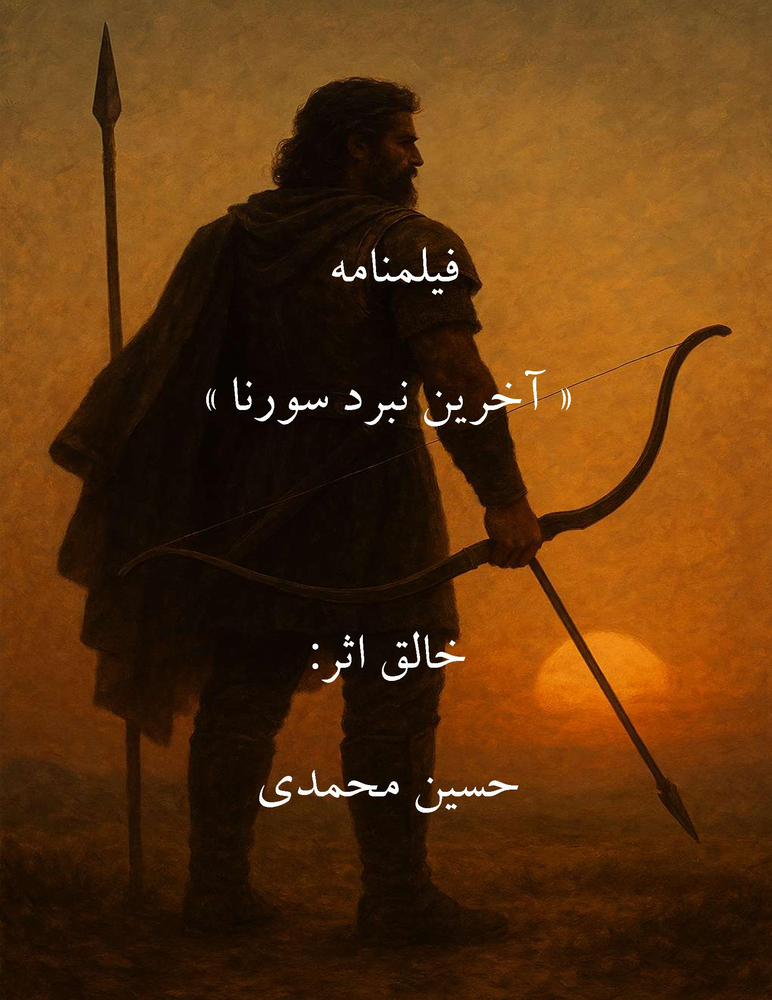

نویسندگی و داستان
ساختن جهانهای روایی، پرداخت شخصیتها و جستوجوی معنا در تجربههای انسانی.
نویسنده، شاعر، پژوهشگر تاریخ و فیلمنامهنویس
«کلمات، راهی برای ماندگار شدن هستند.»
نویسنده، شاعر و پژوهشگر تاریخ
نوشتن برای من تنها کنار هم نشاندن واژهها نیست؛ تلاشی است برای کشف معنا، شناخت انسان و بازخوانی جهان.
ادبیات و تاریخ، هر یک به شیوه خود از زندگی انسان سخن میگویند. یکی از راه تجربه، خیال و روایت؛ دیگری از مسیر حافظه، شواهد و بازنگری در گذشته. پیوند این دو، زمینهای برای اندیشیدن به انسان و زمانه او فراهم میکند.
در نوشتهها و پژوهشهایم، به روایتهایی علاقهمندم که فراتر از لحظه خود میروند؛ روایتهایی که پرسش برمیانگیزند و خواننده را به تأمل دعوت میکنند.
هر حوزه، شیوهای متفاوت برای شناخت انسان و روایت جهان است؛ از تخیل ادبی تا بررسی اسناد و بازخوانی تاریخ.
ساختن جهانهای روایی، پرداخت شخصیتها و جستوجوی معنا در تجربههای انسانی.
مکث در تجربههای زندگی و کشف ظرفیتهای زبان برای بیان احساس، اندیشه و تصویر.
جستوجوی ریشهها، بررسی روایتهای گذشته و تأمل درباره پیوند تاریخ با زندگی امروز.
تبدیل ایده و روایت به ساختاری تصویری با تکیه بر شخصیت، موقعیت و حرکت داستان.
برای مشاهده اطلاعات هر عنوان، وارد صفحه اختصاصی همان کتاب شوید.
هفتاد هزار سال انسان در جستوجوی معنا؛ از نخستین نشانههای معنویت تا شکلگیری نظامهای اعتقادی.
مشاهده جزئیات ←«نوشتن، گاهی بازگشت به گذشته است؛ گاهی کشف چیزی در اکنون، و گاهی ساختن جهانی که هنوز وجود ندارد.»
روایتهایی برای پردهٔ سینما؛ جهانهایی از شخصیت، تاریخ، نبرد و سرنوشت. هر اثر، دریچهای است به دنیایی که در تاریکی سالن سینما جان میگیرد.
 در حال تکمیل
در حال تکمیل
سهگانهای سینمایی که آتش را از اسطوره به تاریخ میکشاند؛ روایتی از خیانت، وفاداری و رستگاری در سه پردهٔ جداگانه.
 تکمیلشده
تکمیلشده
داستانی از دژ و دلاوری؛ جایی که زنان، دیوارهای سنگی را به سنگر اراده تبدیل میکنند و تاریخ را از نو مینویسند.

تکمیلشدهحماسهای از سردار نامدار پارتی؛ نبردی که در آن شکوه، مقاومت و سرنوشت به هم گره میخورند و روایتی ماندگار میسازند.
حقوق مادی و معنوی آثار محفوظ است. متن کامل فیلمنامهها تنها در صورت انتشار رسمی یا ارائهٔ نسخهٔ مجاز، در دسترس عموم قرار خواهد گرفت. اطلاعات بیشتر
این بخش برای انتشار داستانها، شعرها و یادداشتهای نویسنده آماده شده است.
در این بخش میتوان داستانهای منتشرشده را همراه با عنوان و متن کامل معرفی کرد.
مطالب واقعی هنوز اضافه نشدهاند.این جایگاه برای انتشار یادداشتها و نوشتههای تاریخی و ادبی در نظر گرفته شده است.
مطالب واقعی هنوز اضافه نشدهاند.برای پرسوجو درباره کتابها یا پیشنهاد همکاری ادبی و پژوهشی، از فرم تماس استفاده کنید.
contactEndpoint
را در فایل
assets/js/config.js
وارد کنید.
تا آن زمان، فرم غیرفعال خواهد بود.